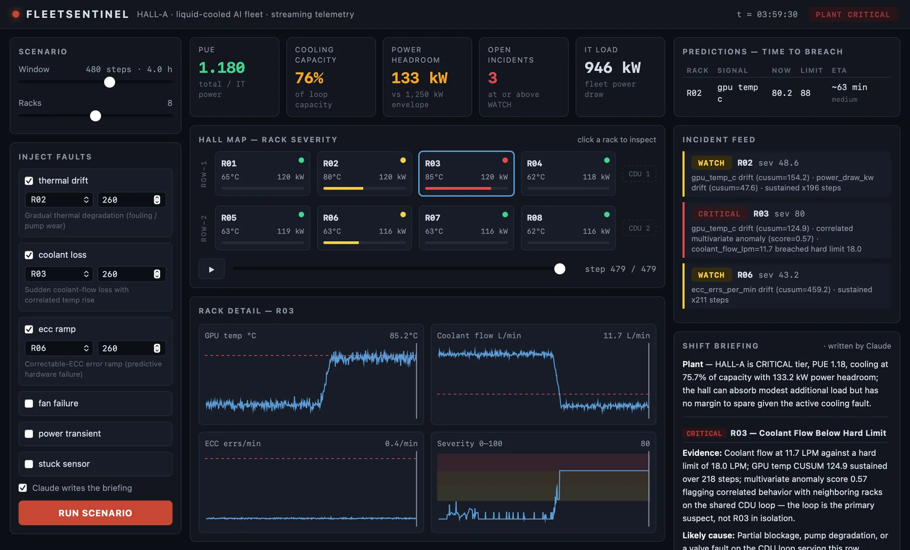

Flagship — live demo
FleetSentinel
Plant-level telemetry for a hall of liquid-cooled AI compute racks. Streaming anomaly detection (EWMA z-score, CUSUM drift, isolation forest) feeds a deterministic severity engine, a robust trend forecaster predicts when a signal will breach its hard limit — "coolant flow breaches in ~22 min" — and incidents roll up from rack to CDU loop to facility PUE and capacity headroom, inferring shared cooling failures from correlated racks. Claude writes the operator shift briefing; the grading path stays ML-free so every page is explainable.
